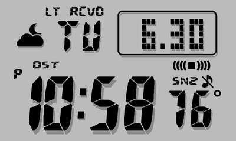
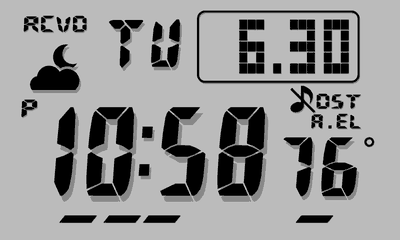
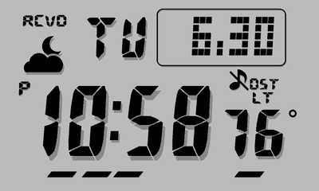

Every face of the LCD Watch plugin for TRMNL, by its name in the Watch Face setting. Each watch is shown next to its
weather face (TRMNL), which adds the weather in the watch's own style.
3459 · Modern square (2018)

3459-TRMNL · Modern square with weather
3159 · Solar square (2012)

3159-TRMNL · Solar square with weather
3495 · Solar square, six languages (2021)

3495-TRMNL · Solar square, six languages, with weather